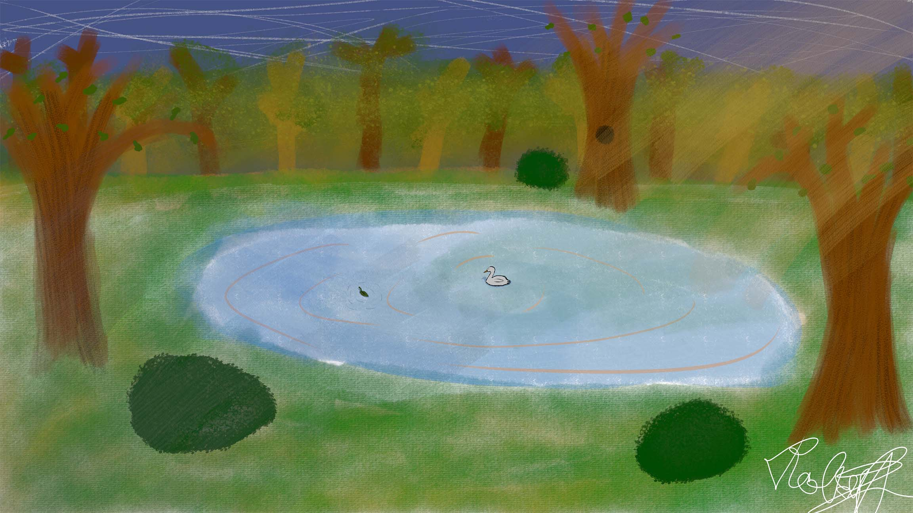
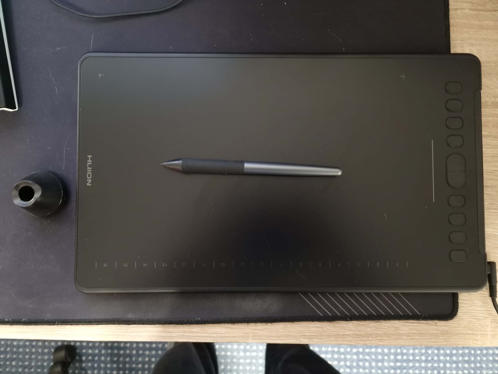
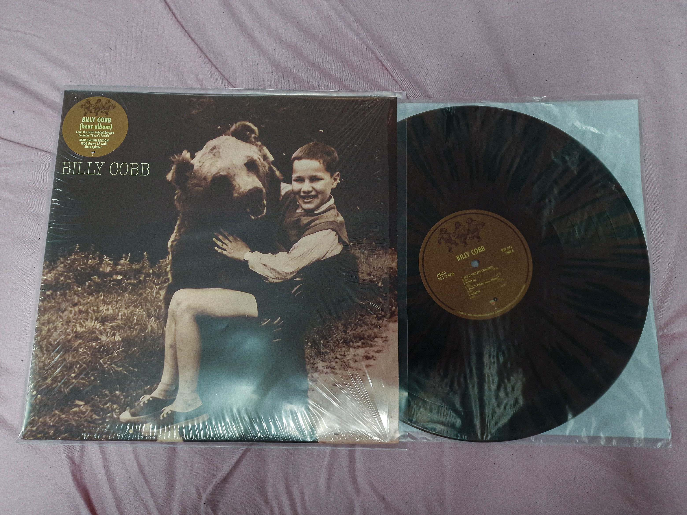

Das Bild hier habe ich gemalt.
Ich mag malen, auch wenn ich vieleicht nicht so gut daran bin.

Am meisten male ich digital mit einen Zeichentablett, trotzdem besitze ich auch Zeichenmaterial.
Wenn ich jemals Musik veröffentliche, möchte ich, dass das Cover vollständig von mir gemacht wird.

Wie Sie vielleicht schon erraten haben, mag ich auch Musik.
Neben einem Spotify-Abo besitze ich auch einen Plattenspieler und einen Kassettenspieler.
Ich ordne alle meine Platten nach Künstler und Erscheinungsjahr.
Früher habe ich viele Platten gekauft, aber ich habe aufgehört, weil die Künstler, die ich jetzt höre, entweder keine physischen Veröffentlichungen haben oder die Platten sehr teuer sind, da sie nur in den USA erhältlich sind.
Meine Lieblingsmusikrichtungen sind Indie/Alternative, Midwest Emo, Noise Rock und Math Rock.

Das hier ist eine Schallplatte, von meinen Sammlung, mit mein Lieblingskünstler, Billy Cobb.
Zu meinem 18. Geburtstag hat er mir auch ein Autogramm und eine personalisierte Geburtstagsnachricht geschickt!